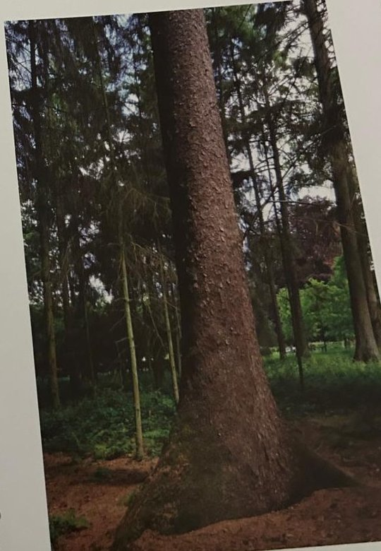
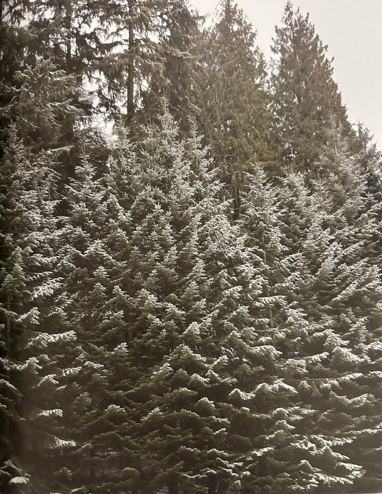

Groepen › Nieuwe Wereld
1. Alaska, Zuidelijk Kustgebergte

Alaska roept bij ons in eerste instantie een bar noordpoolmilieu op, met sneeuw en ijs, toendra’s en taiga’s en uitgestrekte koude moerassen langs de rivieren. Maar in het zuiden van de Amerikaanse staat, onder de temperende invloed van de Stille Oceaan, komen al hoog opgaande bossen voor. Dat zijn de streken die in Groep 1 worden vertegenwoordigd. In de zuidelijke kustketens van Wrangel en Katmai (subgroep 1A) domineren de rijzige Sitkasparren, die tot aan de boord van de oceaan kunnen groeien. We vinden hier ook een van de oudste overlevende Draaidennen in het arboretum. Beide soorten doorstaan met gemak de zoute zeewinden. In de naar het zuidoosten uitlopende landstrook rond Juneau (subgroep 1B) mengen zich Westelijke hemlocksparren met hun brede volle kronen in de bossen. Rode elzen, Balsempopulieren en diverse wilgensoorten vestigen zich als pioniersoorten op uitgeblakerde terreinen na bosbranden en in ooibossen langs beken en rivieren. In de natuurlijke successie worden zij later soms weer verdrongen door climaxboomsoorten als hemlock, zoals we verder ook in Tervuren in de Groep kunnen zien : op de lege of nagenoeg lege cirkels zijn eerder aangeplante populieren en elzen uit gebrek aan licht verdwenen.
Uit het boek
1,81 ha · 16 soorten · 782 bomen · weerstation Ketchikan
- Alaska in twee delen: 1A (Wrangell–Chugach–Katmai) en 1B (Juneau en Glacier Bay), het bostype sitkaspar–hemlock.
- Ketchikan krijgt ruim 3700 mm neerslag per jaar; ons klimaat is te droog voor de sitkaspar, die daardoor geregeld moet worden heraangeplant. De storm van 2006 velde nog enkele grote exemplaren.
- Een deel van de westelijke hemlocks kwam er vanzelf; de balsempopulier is aan zijn derde generatie toe. Er staan ook rode elzen en recent geplante wilgen.
- De groepen 1 tot 5 zijn erg fotogeniek in de winter.


Bron: Geografisch Arboretum Tervuren. Een wereldreis rond bomen (2020), p. 84 en volgende.
Deelgroepen
- 1A – Prince William Sound
- 1B – Alexandre Archipel - Tongass
Soorten in deze groep (16)
- Picea sitchensisSitkaspar · 424 bomen
- Tsuga heterophyllaWest-Amerikaanse hemlockspar · 240 bomen
- Salix sitchensisSitkawilg · 24 bomen
- Alnus rubraRode els · 19 bomen
- Amelanchier alnifolia17 bomen
- Alnus speciesels · 14 bomen
- Mahonia aquifoliumMahonia · 9 bomen
- Salix exiguaSmalste wilg · 8 bomen
- Picea x lutzii7 bomen
- Populus trichocarpaWest-Amerikaanse balsempopulier · 5 bomen
- Salix hookerianaWest-Amerikaanse duinwilg · 5 bomen
- Alnus viridis subsp. fruticosa3 bomen
- Elaeagnus commutata3 bomen
- Alnus viridis subsp. sinuataSitka-els · 2 bomen
- Clematis ligusticifolia1 boom
- Pinus contortaDraaiden · 1 boom
Tekst en foto: arboretum-tervuren.be (Koninklijke Schenking), met toestemming gebruikt.